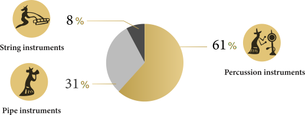
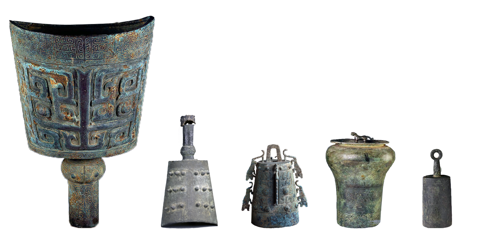
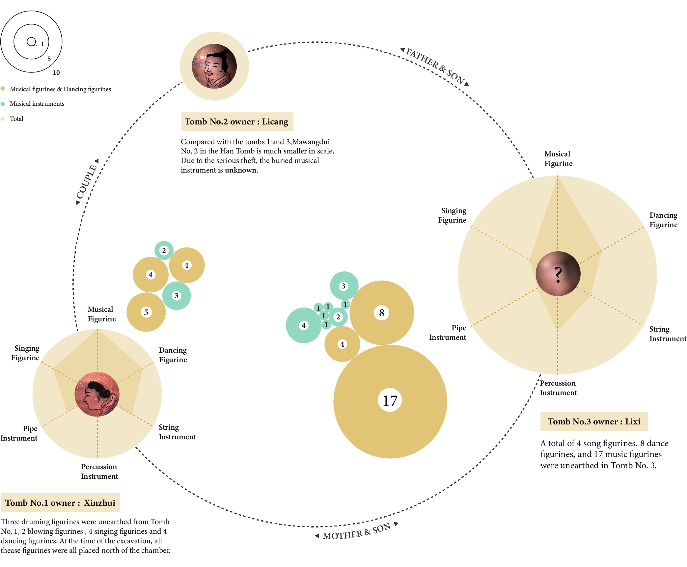

音乐之所由来者远矣
The Origin of Music is Far Away
Lüs Commentaries of History:Music said: "The origin of music is far away." As far as when, there is no record in history. As the most important carrier for expressing inner emotions and needs of ancient people, musical instruments can be traced back to more than 8,000 years ago.
The bronze musical instruments unearthed in the Xiangtan area reflect the exchange and integration with the local culture during the Southern broadcast of the Shang and Zhou cultures.
古代乐器分类
Classification of Ancient Musical Instruments
The musical instruments in Book of Songs can be divided into percussion instruments, string instruments and pipe instruments.

Musical instruments appearing in Book of Songs
青铜乐器功能
Functions of Bronze Musical Instruments
Ancient bronze musical instruments can be roughly divided into seven categories: Nao, Zheng, Gou Diao, Duo, Ling, Zhong and Gu. Ancient instruments can be used for sacrifices, banquets, and the army by function. But this is only a general classification. Bells and drums are both musical instruments in the feast and also used in the army.
湖南地区特色青铜乐器
Special Bronze Musical Instruments in Hunan
Zhong is an important musical instrument in the performance of "Li" and "Yue" before the Qin Dynasty. "Ancient and Modern Music Records" states: "There are six types of metal musical instruments, all of which are Zhong,called Zhong, Zheng, Chun, Zhuo, Nao, Duo." Hunan,the place where bronze Nao and Zhong are most concentrated.

卧虎兽面纹铜铙
1600 B.C. - 1046 B.C.
浏阳古乐特钟
1046 B.C. - 256 B.C.
*The legend uses the musical instruments information from Hunan Museum
汉墓马王堆音乐文物
Musical Relics in Mawangdui Han Tomb
Between 1972 and 1973, the Mawangdui Han Tomb in Changsha, Hunan was excavated, and more than 3,000 precious cultural relics and a female corpse intact were unearthed. Among them, a series of important musical relics were unearthed in Han Tombs 1 and 3. Among them, there are 38 musical relics of 7 types and 9 accessories of 6 types.
